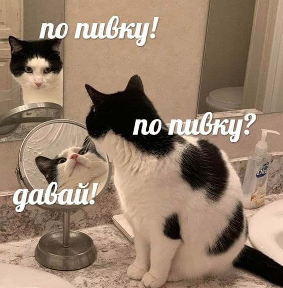

About Tashyan Artyom
My name is Artyom and I`m curious, sensible, and a little bit clumsy sometimes :P
My courses this quarter:
- C1 - Calculus 1
- P1 - Physics 1
- itIT - Intro to IT
- PE - Physics experements
- AER - Academic Englsih Reading
- AE - Academic Englsih
My favotite things
- Movies: Star Wars, Jhon Wick Watch!
- Music: System of a Down Listen!
- Books: Thinking, Fast and Slow by D. Kahneman Read!
My moods

Fun facts about my mates
- Pavel Tin - funny korean(actually chinese) with long and wavy hair!
- Amir - this guy, who hates functions in c++